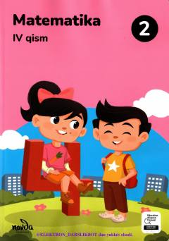

M22-sinf o‘quvchilari uchun matematika fani bo‘yicha to‘rtinchi qism darsligi.
Ushbu darslik umumiy o‘rta ta’lim maktablarining 2-sinf o‘quvchilari uchun matematika fani bo‘yicha to‘rtinchi qism darsligi hisoblanadi. Kitobda katta sonlar, o‘lchov birliklari, geometrik shakllar va ko‘paytirish xossalari hamda amaliy topshiriqlar berilgan. O‘quvchilarning mantiqiy fikrlash va hisoblash ko‘nikmalarini rivojlantirishga qaratilgan mashqlar o‘rin olgan.